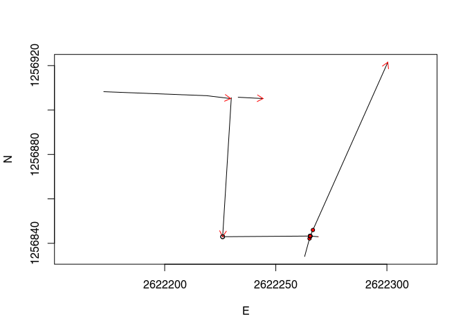

RGPR is a package for R to read, write, analyse and visualise ground-penetrating radar (GPR) data.
R is a [free] programming language and software environment for statistical computing and graphics supported by the R Foundation for Statistical Computing (Wikipedia > R).
Note: This R-package is still in development, and therefore some of the functions may change in a near future. The R-package RGPR is hosted on GitHub at https://github.com/emanuelhuber/RGPR. You can contribute to the development of RGPR: create an account on GitHub, fork RGPR, improve it and sumbmit your modifications.
If you have any questions, comments or wishes, etc. feel free to contact me (in english, french or german)
emanuel.huber@stanford.edu
However, this tutorial will not explain you the math/algorithms behind the different processing methods.
In this tutorial the code snippets are in monospaced typewriter font like in the following example:
1 + exp(1:10)The R output are preceded by a double hash (##). The following R output is from the code snippet above.
## [1] 3.718282 8.389056 21.085537 55.598150 149.413159
## [6] 404.428793 1097.633158 2981.957987 8104.083928 22027.465795Create a text file and save it with the .R extension (the extension for the R-script files). Then copy the code snippets into your R-script file and adapt them to your needs. To run the code in R, copy the code and paste it into the R console. You can also manually enter the code.
Don’t hesitate to consult the help files and to search for help on the internet. For example, to see the help for the function mean(), enter:
?mean # open the help file related to the function mean()I recommand you to first think about the organisation of your files and directories. I suggest to organise them as follows:
/2014_04_25_frenke
/processing (here you will save the processed GPR files)
/rawGPR (the raw GPR data, never modify them!)
/coord (coordinates data)
/FID (fiducial marker files)
/FIDmod (modified fiducial marker files)
/shapefiles (here you will export the coordinate shapefiles)
/topo (ASCII files containing the trace coordinates)
measured_coordinates.txt (the topographic field measurements)
RGPR_tutorial.R (this is you R script for this tutorial)Load the packages RGPR and rChoiceDialogs (rChoiceDialogs provides a collection of portable choice dialog widgets):
library(RGPR) # load RGPR in the current R session
library(rChoiceDialogs)[optionally] If RGPR is not installed, follow the instructions of the tutorial “Getting started” to install it. [optionally] If R answers you there is no package called 'rChoiceDialogs' you need first to install rChoiceDialogs, either through your R software or directly in R with:
install.packages("rChoiceDialogs")The warnings that R shows can be ignored.
The working directory must be correctly set to use relative filepath. The working directory can be set either in your R-software or in R directly with (of course you need to change the filepath shown below):
myDir <- "/home/huber/WORK/UNIBAS/RESEARCH/RGPR/tutorial/2014_04_25_frenke"
setwd(myDir) # set the working directory
getwd() # Return the current working directory (just to check)## [1] "/home/huber/WORK/UNIBAS/RESEARCH/RGPR/tutorial/2014_04_25_frenke"[optionally] Alternatively, you can use an interactive dialog box from the R-package rChoiceDialogs:
myDir <- rchoose.dir(default = "/home/huber/WORK/UNIBAS/RESEARCH/RGPR/")
setwd(myDir) # set the working directory
getwd() # Return the current working directory (just to check)GPRsurveyAn object of the class GPRsurvey is like an index that contains some of the meta-data of several GPR data recorded during one survey. With the class GPRsurvey you have an overview of all your data, you can compute the positions of the profile intersections, plot a top view of the survey and plot the data in 3D with open-GL (implemented in the R-package RGL).
Read all the GPR records (“.DT1”) located in the directory /rawGPR with the exception of the file CMP.DT1 and create an object of the class GPRsurvey. To indicate the filepaths of the GPR data to R you have the following options:
# select all the GPR files except CMP.DT1
LINES <- rchoose.files(caption = " DT1 files",filters = c("dt1","*.dt1"))# select all the GPR files except CMP.DT1
LINES <- c() # initialisation
LINES[1] <- file.path(getwd(), "rawGPR/LINE00.DT1")
LINES[2] <- file.path(getwd(), "rawGPR/LINE01.DT1")
LINES[3] <- file.path(getwd(), "rawGPR/LINE02.DT1")
LINES[4] <- file.path(getwd(), "rawGPR/LINE03.DT1")
LINES[5] <- file.path(getwd(), "rawGPR/LINE04.DT1")# list of the filepath
allFilesinDir <- list.files(file.path(getwd(), "rawGPR"))
allFilesinDir## [1] "CMP.DT1" "CMP.GPS" "CMP.HD" "LINE00.DT1" "LINE00.GPS"
## [6] "LINE00.HD" "LINE01.DT1" "LINE01.GPS" "LINE01.HD" "LINE02.DT1"
## [11] "LINE02.GPS" "LINE02.HD" "LINE03.DT1" "LINE03.GPS" "LINE03.HD"
## [16] "LINE04.DT1" "LINE04.GPS" "LINE04.HD"# now, select only the file ending with .DT1 and without "CMP"
# in their names
selDT1 <- grepl("(.DT1)$", allFilesinDir, ignore.case = TRUE) &
!grepl("CMP", allFilesinDir, ignore.case = TRUE)
LINES <- file.path(getwd(), "rawGPR", allFilesinDir[selDT1])GPRsurveymySurvey <- GPRsurvey(LINES)Have a look at the newly created object:
mySurvey## *** Class GPRsurvey ***
## Unique directory: /home/huber/WORK/UNIBAS/RESEARCH/RGPR/tutorial/2014_04_25_frenke/rawGPR
## - - - - - - - - - - - - - - -
## name length units date fequency coordinates intersections
## 1 LINE00 55.75 m 2014-04-25 100 NO NO
## 2 LINE01 11.50 m 2014-04-25 100 NO NO
## 3 LINE02 68.75 m 2014-04-25 100 NO NO
## 4 LINE03 90.00 m 2014-04-25 100 NO NO
## 5 LINE04 111.25 m 2014-04-25 100 NO NO
## ****************You can see that no coordinates (x,y,z) are associated with the GPR data. Therefore, if you try to plot the suvey you will get:
plot(mySurvey, asp=1) # no plot since no coordinates## Warning in plot.GPRsurvey(mySurvey, asp = 1): no coordinatesNote that the object mySurvey only contains the meta-data and a link to the GPR files (that are stored in your working directory). But mySurvey does not contains the GPR data itself (i.e. the traces). However, we can ask mySurvey to read the data and return it in the form of an object of the class GPR. There are two possibilities:
mySurvey with [[ ]]A02 <- mySurvey[[3]]
A02## *** Class GPR ***
## name = LINE02
## filepath = /home/huber/WORK/UNIBAS/RESEARCH/RGPR/tutorial/2014_04_25_frenke/rawGPR/LINE02.DT1
## description =
## survey date = 2014-04-25
## Reflection, 100MHz,Window length=399.6ns, dz=0.4ns
## 275 traces,68.5m long
## ****************GPR object with the function getGPR()A02 <- getGPR(mySurvey, id = "LINE02")
A02## *** Class GPR ***
## name = LINE02
## filepath = /home/huber/WORK/UNIBAS/RESEARCH/RGPR/tutorial/2014_04_25_frenke/rawGPR/LINE02.DT1
## description =
## survey date = 2014-04-25
## Reflection, 100MHz,Window length=399.6ns, dz=0.4ns
## 275 traces,68.5m long
## ****************You can also directly plot the GPR data with:
# instead of 'A02 <- mySurvey[[3]]' and 'plot(A02)' do:
plot(mySurvey[[2]]) There are two options: (1) either you already have the coordinates of each traces or (2) you have the coordinates of points that were marked in the GPR data using fiducial marker.
We assume that for each GPR record there is a file containing the (x, y, z) coordinates of every traces. The header of these files is “E”, “N”, “Z” instead of “x”, “y”, “z” because in topography “x” sometimes designates the North (“N”) and not the East (“E”) as we would expect. The designation “E”, “N”, “Z” is less prone to confusion and therefore we chose it!
# select all the GPR files except CMP.DT1
TOPO <- c() # initialisation
TOPO[1] <- file.path(getwd(), "coord/topo/LINE00.txt")
TOPO[2] <- file.path(getwd(), "coord/topo/LINE01.txt")
TOPO[3] <- file.path(getwd(), "coord/topo/LINE02.txt")
TOPO[4] <- file.path(getwd(), "coord/topo/LINE03.txt")
TOPO[5] <- file.path(getwd(), "coord/topo/LINE04.txt")readTopo() that creates a list whose elements correspond to the GPR record and contain all the trace coordinates:TOPOList <- readTopo(TOPO, sep = "\t")coords(mySurvey) <- TOPOList## Coordinates of the local system: 2622000 1256834 0The file coord/measured_coordinates.txt shows some of the surveyed coordinates. The content of the file is shown below.
GPR survey 25 April 2014, Frenkental
Coordinates reference system: CH1903+ / LV95
XLINE00
START 2622172.58, 1256908.26 346.7
FID1 2622218.98, 1256906.46 345.9
END 2622229.68, 1256905.16 345.9
XLINE01
START 2622233.08, 1256905.76 346
END 2622244.28, 1256905.16 346
XLINE02
START 2622229.98, 1256905.56 345.9
END 2622226.08, 1256842.96 346.7
XLINE03
START 2622226.08, 1256842.96 346.7
FID1 2622265.48, 1256843.26 344
END 2622269.08, 1256842.96 343.4
XLINE04
START 2622262.98, 1256834.06 343.8
FID2 2622265.48, 1256843.26 344
END 2622300.41, 1256921.53 343.5 You observe that the coordinates of the begining and end of each GPR profile are known and that the coordinates of some fiducial markers were also surveyed.
exportFid(). This function create for each GPR data a file containing the trace number, position for the start and end positions as well as for the fiducial makers.exportFid(mySurvey, fPath = file.path(getwd(), "coord/FID/"))## File "/home/huber/WORK/UNIBAS/RESEARCH/RGPR/tutorial/2014_04_25_frenke/coord/FID/LINE00.txt" created!
## File "/home/huber/WORK/UNIBAS/RESEARCH/RGPR/tutorial/2014_04_25_frenke/coord/FID/LINE01.txt" created!
## File "/home/huber/WORK/UNIBAS/RESEARCH/RGPR/tutorial/2014_04_25_frenke/coord/FID/LINE02.txt" created!
## File "/home/huber/WORK/UNIBAS/RESEARCH/RGPR/tutorial/2014_04_25_frenke/coord/FID/LINE03.txt" created!
## File "/home/huber/WORK/UNIBAS/RESEARCH/RGPR/tutorial/2014_04_25_frenke/coord/FID/LINE04.txt" created!Here is the FID for the GPR data LINE04 (coord/FID/LINE04.txt):
TRACE,POSITION,COMMENT
1,0,START
91,22.5,F1
100,24.75,F2
122,30.25,F3
445,111,ENDThe same file with the three columns added:
TRACE,POSITION,COMMENT,E,N,Z
1,0,START,2622262.98,1256834.06,343.8
100,24.75,F2,2622265.48,1256843.26,344
445,111,END,2622300.41,1256921.53,343.5 Note that the two lines with the fiducial markers F1 and F3 were removed as no coordinates are available for these markers. Save the modified files in the directory coord/FIDmod.
readFID():FidFiles <- c() # initialisation
FidFiles[1] <- file.path(getwd(), "coord/FIDmod/LINE00.txt")
FidFiles[2] <- file.path(getwd(), "coord/FIDmod/LINE01.txt")
FidFiles[3] <- file.path(getwd(), "coord/FIDmod/LINE02.txt")
FidFiles[4] <- file.path(getwd(), "coord/FIDmod/LINE03.txt")
FidFiles[5] <- file.path(getwd(), "coord/FIDmod/LINE04.txt")FIDs <- readFID(FidFiles)## read /home/huber/WORK/UNIBAS/RESEARCH/RGPR/tutorial/2014_04_25_frenke/coord/FIDmod/LINE00.txt...
## read /home/huber/WORK/UNIBAS/RESEARCH/RGPR/tutorial/2014_04_25_frenke/coord/FIDmod/LINE01.txt...
## read /home/huber/WORK/UNIBAS/RESEARCH/RGPR/tutorial/2014_04_25_frenke/coord/FIDmod/LINE02.txt...
## read /home/huber/WORK/UNIBAS/RESEARCH/RGPR/tutorial/2014_04_25_frenke/coord/FIDmod/LINE03.txt...
## read /home/huber/WORK/UNIBAS/RESEARCH/RGPR/tutorial/2014_04_25_frenke/coord/FIDmod/LINE04.txt...If R throw the following error message “Error in readFID(FidFiles) : The headers should be”E“,”N“,”Z“,”TRACE“!” check that the three columns have been added to all the files and that the headers of these columns are correctly set (“N”, “E”, “Z”; the order does not matter).
interpPos() interpolate the position of the traces from the known trace positions and add the interpolated trace position to the object mySurvey.# interpolating the positions of the traces between the fiducials for each
# GPR-lines and adding the position to the survey.
# + compute the intersection between the GPR-lines
# windows open for checking purposes
# dx should be between 0.1 m and 0.5 m
mySurvey <- interpPos(mySurvey, FIDs) ## LINE00 : mean dx= 0.258 range dx= 0.244 - 0.337
## LINE01 : mean dx= 0.249 range dx= 0.249 - 0.249
## LINE02 : mean dx= 0.229 range dx= 0.229 - 0.229
## LINE03 : mean dx= 0.12 range dx= 0.027 - 0.177
## LINE04 : mean dx= 0.215 range dx= 0.096 - 0.248
## Coordinates of the local system: 2622000 1256834 0The function interpPos() prints for every GPR record the mean trace spacing as well as the trace spacing range. Normally, these values should be close to the operating settings. In this case, the trace spacing was set equal to \(0.25\,m\) on the field. The trace spacing values for XLINE00, XLINE01 and XLINE02 looks good. However, the trace spacing for XLINE04 and more particularly for XLINE03 could be critic (the smallest trace spacing values are very low). You should check and if necessary correct the topographic data…
Setting the coordinate reference system is important when exporting the coordinate data in geospatial data format, because it allows the coordinates to be correctly projected in other coordinate reference systems. The topographic data were measured within the new Swiss coordinate system (datum: CH1903+, reference frame: LV95) that can be defined with the code EPSG \(2056\) that corresponds to the new Swiss coordinate system.
crs(mySurvey) <- "+init=epsg:2056"To export the coordinates as shapefiles (one shapefile for all the GPR records), enter:
exportCoord(mySurvey, fPath="coord/shapefiles/frenke")To export the coordinates as ASCII (.txt) files (on file per GPR record):
exportCoord(mySurvey, folder="coord/topo", type="ASCII")Note that the coordinates are added to the object mySurvey but not to the GPR file. Unless you save the GPR data you will lose the coordinates when you will quit R. To save the GPR data, see [Save, export][].
Use the plot() function
plot(mySurvey) The red arrows indicate the direction of the survey, the red dots the fiducial markers and the circles the GPR profile intersections.
To plot the first GPR record, enter:
plot(mySurvey[[1]], addTopo=TRUE)## time to depth conversion with constant velocity 0.1To plot all the GPR records with the topographic information in 3D, enter:
plot3DRGL(mySurvey, addTopo = TRUE)Enlarge the window, use the mouse to move the view and zoom in.
Once you found a satisfactory combination of processing steps, you can apply them all the GPR data. Here is an example
Create a sub-directory in the /processing directory (name it mySurveyProc):
procDir <- file.path(getwd(), "processing/mySurveyProc/")
dir.create(file.path(procDir),showWarnings = TRUE)## Warning in dir.create(file.path(procDir), showWarnings = TRUE): '/home/
## huber/WORK/UNIBAS/RESEARCH/RGPR/tutorial/2014_04_25_frenke/processing/
## mySurveyProc' already existsNow apply the processing step with a loop to all GPR data indexed by mySurvey:
for(i in seq_along(mySurvey)){
A <- mySurvey[[i]] # get GPR-line no. i
cat("processing of line", name(A)," ")
A <- dcshift(A, 1:100) # DC-shift
A <- gain(A, type = "power", alpha = 1, t_end = 200, t_cst = 100)
A <- fFilter(A, f= c(150, 200), type = "low", plotSpec = FALSE)
A <- gain(A, type = "exp", alpha = 0.1, t_0 = 50, t_end = 180)
A <- dewow(A, type = "MAD", w = 50) # dewow
A <- filter2D(A, type = "median3x3")
# export PDF
exportPDF(A, clip = 30, fPath = file.path(procDir, name(A)), addTopo = TRUE,
lwd = 0.5, ws = 1.5)
# save the processed GPR-line into ".rds" format
writeGPR(A, fPath = file.path(procDir, paste0(name(A),".rds")),
format = "rds", overwrite = TRUE)
cat("!\n")
}Next time you can directly load the processed files as follows:
# select all the GPR files except CMP.DT1
procLINES <- c() # initialisation
procLINES[1] <- file.path(procDir, "LINE00.rds")
procLINES[2] <- file.path(procDir, "LINE01.rds")
procLINES[3] <- file.path(procDir, "LINE02.rds")
procLINES[4] <- file.path(procDir, "LINE03.rds")
procLINES[5] <- file.path(procDir, "LINE04.rds")procSurvey <- GPRsurvey(procLINES)## Coordinates of the local system: 2622000 1256834 0and check the results:
plot(procSurvey[[1]], addTopo=TRUE)
plot3DRGL(procSurvey, addTopo = TRUE)Notes